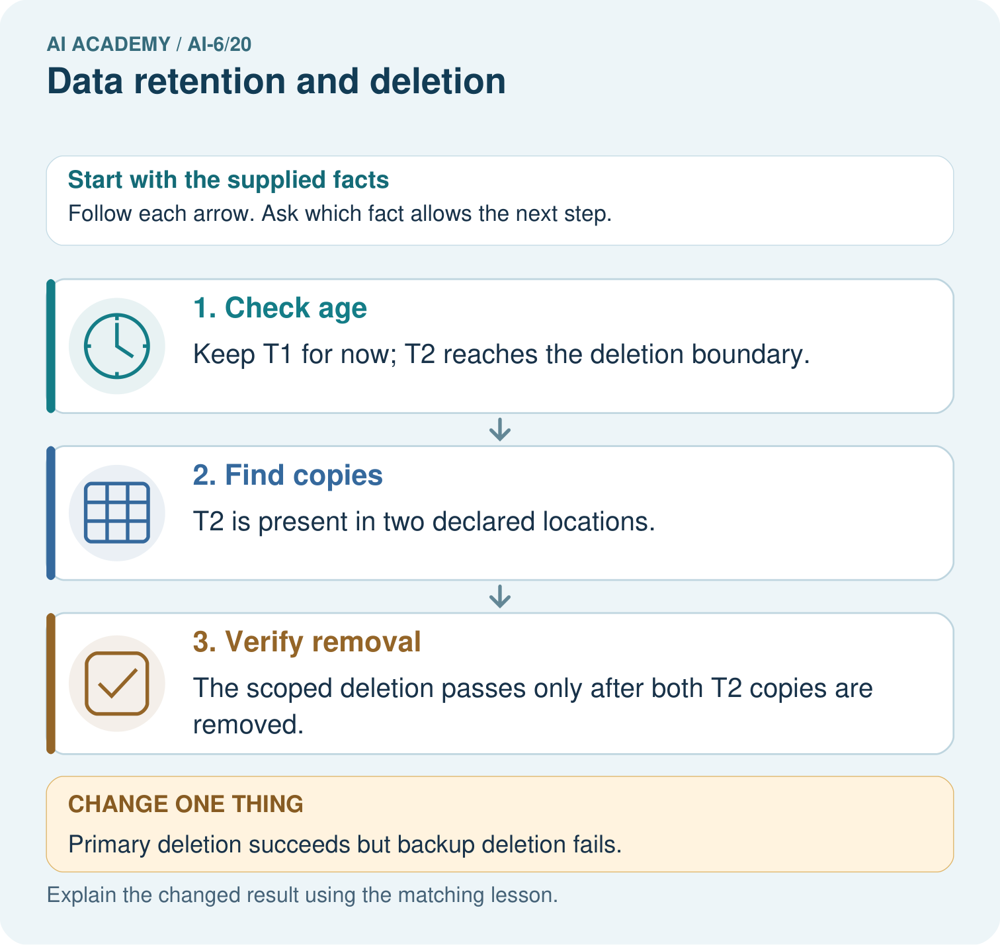
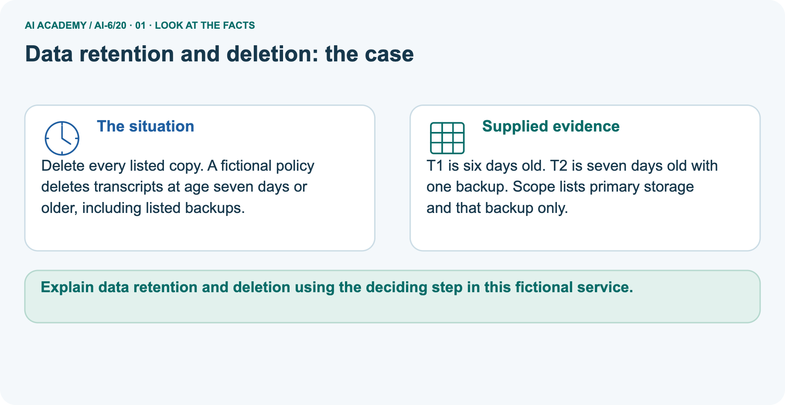
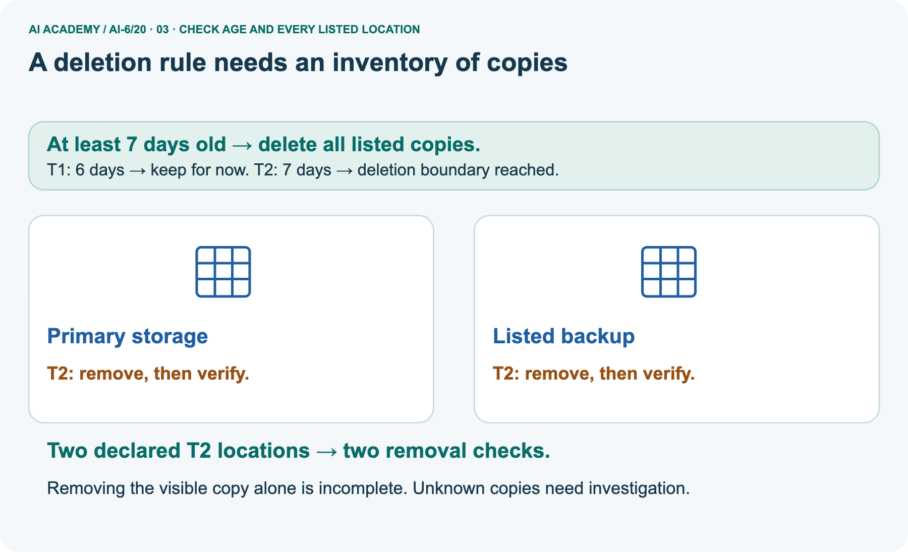
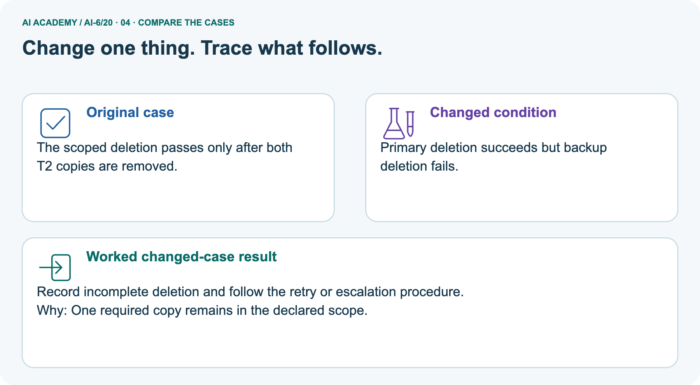
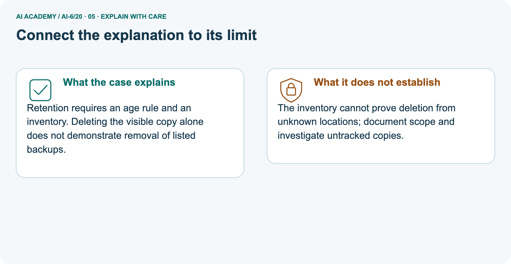
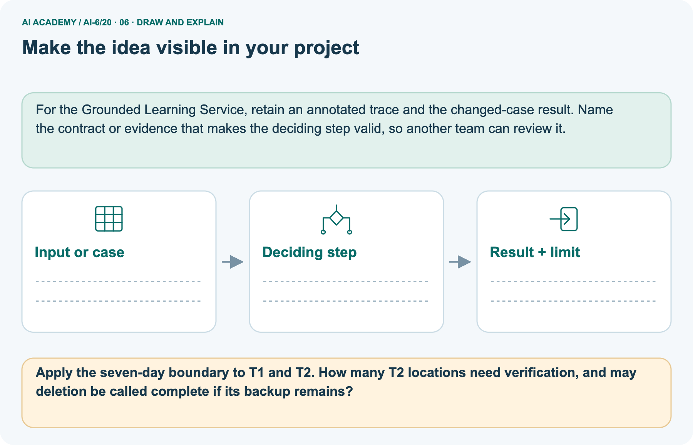

AI Academy · Level 6 · Grade 11 · Week 20 · Teacher guide
Data retention and deletion
Learn to understand, design, build, test and explain AI systems responsibly.
Project: Grounded Learning Service
THE CONNECTED WEEK
Ask which age clock and which listed content locations the claim covers.
Teach inclusive boundaries, metadata/content separation and preserved failure/retry reports without claiming real secure erasure or legal requirements.
Keep one habit: Model primary/cache actions → inspect explicit backup failures → compare content/audit clocks → assess a fresh temporary-log residual → record scope limits.
Main lesson · Section 1
Prepare the connected service investigation
Keep modelling, shared practice and independent evidence distinct.
Target and main teaching plan
Primary target: Explain the mechanism and terminology of data retention and deletion
| Session | Sequence and minutes | Resources |
|---|---|---|
| Session 1 · Understand · 45 min | 0–7: recall and prerequisite; 7–15: inspect the concrete case and predict; 15–30: teacher models the worked trace; 30–40: learners explain a step using the text and visual; 40–45: check the core idea. | Use Your mission, Notice the evidence, See how it works, Words that unlock the idea and Follow a worked example; record recall in the workbook. |
| Session 2 · Practise · 45 min | 0–5: retrieve the procedure; 5–15: W2 completion practice; 15–23: explain and check with a partner; 23–30: each learner answers the misconception check; 30–40: targeted reteaching or a harder variation; 40–45: prepare the investigation. | Use Find and repair a mistake, Practise together and Build your understanding; use the matching workbook W2 and Individual reasoning check. |
| Session 3 · Investigate and transfer · 45 min | 0–5: retrieve the decision rule; 5–20: investigate or trace; 20–30: start the independent case; 30–38: connect the project; 38–43: act on feedback; 43–45: plan the return check. | Use Run the investigation, Connect your project and Try a new case independently. Allow extra time for the full task set. When code is supplied, use the examples in See how it works or Follow a worked example and the browser lab in Supported practice, repair and portfolio. |
This is a starting allocation of 135 minutes, not a validated duration. Preserve all named topics. Schedule extra time for connected examples, the full investigation, independent cases and project building.
Repeated copies of a case share one recorded attempt; they are not new evidence.
Preparation and prerequisite
Lesson and workbook; paper and pencil
Calculator and optional local Python 3 for arithmetic; no live API or private data
Prepare the fresh retry separately and withhold its solution until after collection
A result depends on the inputs, procedure and conditions that produced it. Preserve data roles and distinguish observed outcomes from predictions or unmeasured conditions.
If the prior concept cannot be explained, use a short retrieval activity before this chapter.
Opening retrieval
Without opening the old lesson, explain one key idea from Sandboxing and resource limits. Give an example and a mistake that the idea helps you avoid.
Look for: Explain the mechanism and terminology of sandboxing and resource limits
Reference example, not the only acceptable wording: Teacher explanation: Sandboxing and quotas constrain what a process may access or consume. They reduce possible operations but do not verify every result.
The fictional job may read its fixture directory, write its output directory, use no network and run for at most 2 seconds with at most 10 queued tasks. Reject excess work before starting it.
Without opening the old lesson, explain one key idea from External side effects and recovery. Give an example and a mistake that the idea helps you avoid.
Look for: Explain the mechanism and terminology of external side effects and recovery
Reference example, not the only acceptable wording: Teacher explanation: External effects can succeed while their acknowledgement is lost. Recovery must inspect committed state before repeating the operation.
The mock ledger records prepared, committed or unknown per operation ID. Retry a committed operation by returning its result; reconcile unknown status instead of assuming failure.
Preserve compensation as a separate authorised action.
Without opening the old lesson, explain one key idea from Planning and action selection. Give an example and a mistake that the idea helps you avoid.
Look for: Explain the mechanism and terminology of planning and action selection
Reference example, not the only acceptable wording: Teacher explanation: Planning proposes steps; execution must still validate permissions and prerequisites for each step. Replanning cannot invent authority.
For read-only reporting, allowed plan is validate -> retrieve -> verify -> answer. If retrieval lacks evidence, route to review. Reject write or send steps before they run.
Pictured end goal
Explain data retention and deletion using the deciding step in this fictional service.
Earlier wording, alternatives and picture transcripts
Teach the learning cycle
Case exposure check: this source example appears in ai-3/28, ai-6/20. Reuse a familiar case for recall or modelling; verify that the case used to assess transfer has not already received feedback.
Retrieval answer guidance
Sandboxing and resource limits
External side effects and recovery
Planning and action selection
Use the three-session teaching cycle above, with extra time as needed. Retention and deletion cover all declared stores, including caches and logs. Removing a visible row may leave copies elsewhere. Use the supplied constructed scenarios to make the mechanism inspectable. Collect W4 before sharing solutions. Students should name intermediate evidence and limitations; classroom pacing and learning effectiveness remain unvalidated.
Outcomes
Explain the mechanism and terminology of data retention and deletion
Apply the stated procedure to a new case with a traceable result
Identify an assumption or limitation and design a revealing follow-up
Preparation
Prerequisite answer
End goal for the pictorial case
This added worked case illustrates the week’s main idea. Retain all original and connected topics; schedule its practice within the teaching cycle.
Main lesson · Section 2
Teach inclusive age rules, copy inventories and policy-correct evidence retention
Separate main backup uncertainty, pictured explicit backup policy and the current independent 4-day task.
Definitions and complete fictional retention policy
Retention and deletion cover all declared stores, including caches and logs. Removing a visible row may leave copies elsewhere.
Toy policy retains session content for 7 days and deletes it when age is at least 7. Audit metadata may remain for 30 days without content. Track primary storage, cache and backup policy separately.
| Main fictional retention policy | Exact classroom rule |
|---|---|
| Age measurement | Supplied nonnegative whole-day ages at one fixed snapshot |
| Session-content boundary | Age at least 7 days: removal due; age below 7: retain for now |
| Main listed content stores | Primary and cache, both initially holding the three supplied records |
| Backups in main case | Need their separately stated expiry process; not inspected by this fixture |
| Audit metadata | May remain under a separate 30 day policy, without transcript content |
| Audit age clock | Age since the audit event was created, not the original transcript age |
| Verification | Check due content absent from every listed store in the modeled scope |
| Code scope | Transform copies of fictional dictionaries; no actual storage deletion or secure erasure |
| Policy status | These toy lifetimes are supplied exercise rules, not legal retention requirements |
Main copy ledger and checked reasoning
| Main record ID | Content age | Primary/cache copies initially | Required modeled action |
|---|---|---|---|
| S6 | 6 | One in each of2 stores | Retain both content copies for now |
| S7 | 7 | One in each of2 stores | Remove both: equality reaches deletion boundary |
| S9 | 9 | One in each of2 stores | Remove both: above boundary |
| After successful scoped simulation | S6 remains in both stores | Four due entries removed | Only primary/cache postconditions checked |
| Main backups | No snapshot supplied | Separate expiry policy still needed | Do not claim global deletion |
| New allowed audit events | Event age 0 | No transcript payload | Audit age 29: retain; age 30: due |
Require inclusive deletion at age 7, not only ages above 7. Main primary/cache have S6/S7/S9, so four due S7/S9 copies are removed in the transformed model; S6 stays, and backup expiry remains unverified. Audit events contain IDs/action/location/event age only, with a separate 30 day clock.
Picture T2 needs both primary and its listed backup removed; one failed backup leaves scoped_complete false, and the prior failure report survives a retry. The Python simulation changes copied dictionaries and cannot prove actual erasure or complete store discovery. The selected current independent case uses a 4-day boundary and a temporary-log residual; earlier 5-day wording is only retained practice.
Data retention and deletion — evidence trace
Guided: Retain age 6; delete content ages 7 and 9 from primary and cache under the policy. Retain only allowed audit metadata; backups need their stated expiry process.
Qualification: This fictional retention exercise is not a statement of legal retention requirements.
Exit: accept a concrete variation with its predicted outcome and a stated condition that would challenge the mechanism; reject a claim resting on unmeasured evidence.
Record ages are 6, 7, 9 days. Cache contains copies of all three.
Retain age 6; delete content ages 7 and 9 from primary and cache under the policy. Retain only allowed audit metadata; backups need their stated expiry process.
Compare the intermediate evidence with the final statement. Explain why each number or decision follows from the stated inputs. The conclusion belongs to this scenario and procedure; changing the inputs, evaluation population or authority can change what it establishes. Retain only policy-permitted audit metadata without expired content so a later revision can be compared honestly.
Unknown-age, audit-clock and residual-copy probes
| Retention or inventory probe | Expected interpretation |
|---|---|
| Content age 6 under7 day rule | Retain for now |
| Content age 7or9 | Removal due from every applicable listed content store |
| Primary removed, listed backup remains | Scoped deletion incomplete; do not report success |
| Unknown record age in a listed store | Reject incomplete manifest rather than guess retention status |
| No listed-store inventory | Reject empty/incomplete fixture; do not claim vacuous global deletion |
| New content-free audit event | Own age clock starts at creation; its 30 day lifetime is separate |
| Expired content copied into audit payload | Violates the stated no-content metadata policy |
| Same modeled removal retried | Check remaining copies and retain prior failures; do not overwrite history |
| All listed copies absent in the model | Scoped postcondition only, not proof of unknown-store deletion or physical erasure |
Separate picture inventory and failure/retry scope
Delete every listed copy. A fictional policy deletes transcripts at age seven days or older, including listed backups.
T1 is six days old. T2 is seven days old with one backup. Scope lists primary storage and that backup only.
The main example checks primary/cache and leaves backup expiry unverified. The picture has a separate explicit scope: primary storage and the one listed backup of T2, both covered by its fictional 7-day content policy. T1 at age 6 is retained; T2 at age 7 requires removal from two locations. If primary removal succeeds but the backup remains, record incomplete deletion and that residual location.
A separate retry can clear the remaining modeled copy while the failed report stays in the history. This establishes no removal from unknown locations or real physical media.
Picture trace and incomplete-backup key


Read the picture one step at a time
Retention requires an age rule and an inventory. Deleting the visible copy alone does not demonstrate removal of listed backups.
The inventory cannot prove deletion from unknown locations; document scope and investigate untracked copies.
Change: Primary deletion succeeds but backup deletion fails.
Prediction: Record incomplete deletion and follow the retry or escalation procedure.
Reason: One required copy remains in the declared scope.
Earlier wording, alternatives and picture transcripts
Begin by writing the question the procedure is intended to answer. Identify the information already supplied, the information it will produce and the information still missing.
These are constructed classroom examples; they do not require live accounts, private records or an external service. Do not treat a plausible explanation as a measured outcome.
Before applying the procedure, write its units, denominator or decision boundary where relevant. A partner should be able to repeat each step using the same inputs.
If a required input is absent or violates the stated contract, record that condition explicitly instead of quietly replacing it with a convenient value.
| Term | Meaning |
|---|---|
| Retention period | The declared lifetime of stored information |
| Deletion boundary | The age at which removal applies |
| Residual copy | A remaining duplicate in another store |
Model the reasoning aloud
Use the complete worked example below before asking learners to complete W2. Reveal a small part, invite a prediction, then explain the deciding step.
These teacher notes contain solutions; do not reveal the independent case answer during modelling.
| Thinking move | Teacher prompt |
|---|---|
| Plan | What is given? What is the question? Which procedure fits these facts? |
| Do | Point to each input and intermediate step in the worked trace. Name the rule that allows the next step. |
| Check | Does the output answer the question? Which assumption or limitation prevents a larger claim? |
Use the diagram and verbal explanation together. Ask learners to match a sentence to a specific visual step; do not assign learners fixed visual or auditory learning styles.
A pictorial worked case: Data retention and deletion
The facts we will use



Why this result follows
What this example does not establish
Change one thing in the pictured case
Ask while showing the picture
Cover the result. Ask learners to name the inputs and predict the next step. Uncover one step, connect the icon to the actual procedure, and explain its evidence. Then change the supplied condition and compare.
The picture is a representation; it does not document execution of a real AI model.
Main lesson · Section 3
Model a step,then remove help
Collect each learner’s reasoning before showing a key.
Current completion task and checked reasoning
Completion task: Record ages are 6, 7, 9 days. Cache contains copies of all three. Show the intermediate steps and give the conclusion with its scope.
Teacher check: Teacher explanation: Retain age 6; delete content ages 7 and 9 from primary and cache under the policy. Retain only allowed audit metadata; backups need their stated expiry process.
Start by identifying the given inputs together. Leave the intermediate steps blank. If needed, model one step, then withdraw that help on the next step. Move to a full trace only when the partial trace is understood.
For partners, alternate explainer and checker; collect a response from every learner before discussion.
Individual misconception check
Use the worked case for Data retention and deletion. Proposed explanation: “The worked result establishes every future case”. Decide whether this explanation is supported.
Point to the step or supplied fact that decides; explain your repair if needed.
Expected correction: This fictional retention exercise is not a statement of legal retention requirements.
Collect explanations, not only yes/no votes. If a misunderstanding is common, re-model the relevant step for the class.
If it affects a few learners, give a short targeted group explanation while others solve a more demanding variation.
Pictured reasoning and changed case
Apply the seven-day boundary to T1 and T2. How many T2 locations need verification, and may deletion be called complete if its backup remains?
Keep T1 for now; T2 reaches the deletion boundary. T2 is present in two declared locations. The scoped deletion passes only after both T2 copies are removed.
Changed case: Record incomplete deletion and follow the retry or escalation procedure. One required copy remains in the declared scope.
Changed-case reasoning: Record incomplete deletion and follow the retry or escalation procedure. One required copy remains in the declared scope.
Collect each learner’s explanation before discussion. Use the first missing connection between input, deciding step and result to choose support. This question is worked-case practice, not fresh mastery evidence.
Accessible support and extension
Use See how it works and Follow a worked example. Collect a prediction before revealing its result; ask the learner to point to each intermediate fact.
Provide an input/procedure/result/limit frame and a calculator when needed. Ask students to identify the first step before completing the whole trace.
Extension: compare two concrete variants of this mechanism while holding unrelated conditions fixed; report both successful and unsuccessful outcomes.
Earlier wording, alternatives and picture transcripts
| Time or stage | Teacher action |
|---|---|
| Session 1: 0–7 minutes | Retrieve the prerequisite; identify the input, procedure and evidence source. |
| 7–18 minutes | Explain section 1 and vocabulary. Complete W1 with a mechanism-based explanation. |
| 18–32 minutes | Trace the declared procedure and worked case. Complete W2, recording intermediate steps. |
| 32–45 minutes | Discuss the diagram with the worked input; use W3 to distinguish measured claims and limitations. |
| Session 2: 0–8 minutes | Retrieve the worked reasoning and collect the guided response before discussing it. |
| 8–20 minutes | Compare a proposed boundary variant with the original case; identify what remains fixed. |
| 20–35 minutes | Collect W4 independently. Require the procedure trace and the bounded conclusion. |
| 35–45 minutes | Use W5 and exit responses for feedback. Administer the fresh retry after feedback and preserve both attempts. |
Reduce help deliberately
Individual reasoning check
Pictorial practice question
Reasoned teacher answer
Main lesson · Section 4
Run the complete supplied investigation
Separate predictions,actual runs and paper traces.
Complete inputs,expected results and limits
Main age 6 content is retained; ages 7 and 9 are due in primary/cache, while backups need their separate expiry policy. Picture T2 has two listed locations and remains incomplete if its backup survives. Audit metadata uses its own 30-day clock and contains no transcript payload. Selected current 4-day rule: retain X at age 3; Y at age 4 and Z at age 5 are due.
A full-content Y copy in a temporary log still violates the policy after its primary copy disappears. Use the current 4-day task rather than earlier 5-day practice, and keep only permitted metadata as failure evidence.
Diagnose the current misconceptions
The worked result establishes every future case: This fictional retention exercise is not a statement of legal retention requirements.
A missing input may be replaced without recording the change: A replacement changes the evidence or contract. Record the change and its justification; do not silently turn unknown into a measured value.
Repeating an assessed case is new independent evidence: A replay checks consistency. An example used for feedback or revision cannot later be described as untouched final evaluation.
Use Run the investigation for the evidence ledger. Add a boundary or missing-input case and record the expected response before checking. More successful repeats of one case do not establish wider coverage.
Choose accessible support
| What the response shows | Next teaching action |
|---|---|
| Missing or misread facts | Read the case aloud, mark supplied versus unknown facts, and let the learner restate it. |
| Wrong procedure | Return to the deciding step in the worked case. Contrast it with the proposed incorrect explanation. |
| Arithmetic or implementation error | Trace intermediate values or lines; preserve the first mismatch and retry that step. |
| Correct result without a reason | Ask for a trace and a changed case before marking independent understanding. |
| An unsupported wider claim | Ask which supplied evidence supports the claim and which further observation would be needed. |
Offer an oral explanation, drawing, enlarged visual or fewer examples when that removes a reading/writing barrier. Keep the same reasoning goal.
Stretch secure learners by changing a boundary or assumption and asking them to defend the effect, not simply by assigning more of the same questions.
Earlier wording, alternatives and picture transcripts
Match the support to the first error
Main lesson · Section 5
Assess the new service scenario
Keep the selected answer private until after a first attempt.
Selected independent task and checked answer
Selected case: Fictional retention policy deletes records at age >=4 days. X is3 days, Y4, Z5. A copy of Y remains in a temporary log after its main record is deleted. Evaluate compliance.
Teacher explanation: Retain X at age 3 days. Delete Y at age 4 and Z at age 5 from every store covered by the fictional policy. The temporary log still contains a copy of Y, so deleting its main record alone is incomplete. Remove that content through the declared deletion process and verify the copies; do not treat this fictional rule as a legal retention requirement.
Judge explanation,trace and limits
| Dimension | Evidence required |
|---|---|
| Explanation | Names the applicable idea or procedure and ties it to the supplied facts. |
| Trace and result | Preserves the given inputs and shows the relevant intermediate steps; distinguishes a prediction from an observed execution. |
| Limits | States the assumptions, missing evidence or conditions under which the result would change. |
Record each dimension as not yet, with support, or independent. Accept a valid alternative procedure with a defensible trace.
Do not penalise an honestly recorded model failure if the learner correctly explains its evidence and limits.
Give one usable repair
Name the earliest unsupported step and give one action to repair it. Have the learner make that repair now and explain why. Then assess the relevant skill on a fresh, fully specified case.
Confirm it was not previously practised with feedback; solve and check the new case before assigning it. A follow-up design prompt is a starting brief, not automatically an equivalent test.
W1 Explain the mechanism
Explain the weekly mechanism in your own words. Use the worked scenario to name its input, decision rule and output.
Teacher explanation: Retention and deletion cover all declared stores, including caches and logs. Removing a visible row may leave copies elsewhere.
Toy policy retains session content for 7 days and deletes it when age is at least 7. Audit metadata may remain for 30 days without content. Track primary storage, cache and backup policy separately.
W2 Trace the worked case
Record ages are 6, 7, 9 days. Cache contains copies of all three. Show the intermediate steps and give the conclusion with its scope.
Teacher explanation: Retain age 6; delete content ages 7 and 9 from primary and cache under the policy. Retain only allowed audit metadata; backups need their stated expiry process.
W3 Audit the limit
A report omits this qualification: This fictional retention exercise is not a statement of legal retention requirements. Explain how omitting it could change a reader's interpretation, and write an accurate replacement.
Teacher explanation: This fictional retention exercise is not a statement of legal retention requirements.
State the observed result separately from the unverified or out-of-scope claim; preserve the original evidence rather than inventing a missing fact.
W5 Design a revealing follow-up
For the worked scenario, propose one additional case that could reveal a failure, describe its expected outcome before running it, and explain what would need to remain fixed for a fair comparison.
Do not reuse W4 as a new final test after receiving feedback.
Teacher explanation: Accept a concrete variant of the worked input or a missing/conflicting/boundary condition, with an expectation derived from the declared procedure.
Require preserved settings, original outputs and data roles. This fictional retention exercise is not a statement of legal retention requirements.
The new case should test this particular mechanism rather than merely restate the original result.
Earlier wording, alternatives and picture transcripts
Guided and exit questions
Guided: Retain age 6; delete content ages 7 and 9 from primary and cache under the policy. Retain only allowed audit metadata; backups need their stated expiry process.
Qualification: This fictional retention exercise is not a statement of legal retention requirements.
Exit: accept a concrete variation with its predicted outcome and a stated condition that would challenge the mechanism; reject a claim resting on unmeasured evidence.
W1 Explain the mechanism
W2 Trace the worked case
W3 Audit the limit
W4 Apply a new case independently
Retention is5 days, inclusive deletion boundary. Ages 4, 5, 6; a log stores complete content. Trace required action.
Teacher explanation: Age 4 retained; age 5/6 content removed from declared stores. Full-content logs violate minimisation and need policy-compliant handling.
W5 Design a revealing follow-up
Independent assessment and fresh retry
W4: Age 4 retained; age 5/6 content removed from declared stores. Full-content logs violate minimisation and need policy-compliant handling. Require intermediate reasoning and the stated scope.
Fresh retry: Retention 3 days; records ages 2, 3. Expected reasoning: Age 2 retained; age 3 deletion boundary applies. Document residual copies under the backup policy.
If students need support, record it and reassess with another new case rather than awarding independence to a copied answer.
Assess independent transfer
Selected case answer
Feedback that the learner uses
Main lesson · Section 6
Connect, support and revisit service design
Use saved evidence and boundary decisions to choose the next step.
Project and next-week bridge
Add a labelled data retention and deletion evidence sheet to Grounded Learning Service. Show how you can explain the mechanism and terminology of data retention and deletion.
Use the supplied fictional case and keep its inputs, intermediate steps, calculation or prediction, and limitation. Connect this record to last week’s record; a matching answer without a trace is insufficient.
Provide an input/procedure/result/limit frame and a calculator when needed. Ask students to identify the first step before completing the whole trace.
Extension: compare two concrete variants of this mechanism while holding unrelated conditions fixed; report both successful and unsuccessful outcomes.
Next connection: Caching and stale information. Preserve the current case record and retrieve its evidence boundary before moving on.
Retain the project ledger and assess a changed case after support. Check the relevant prerequisite before carrying this component forward.
For the Grounded Learning Service, retain an annotated trace and the changed-case result. Name the contract or evidence that makes the deciding step valid, so another team can review it.
Delayed return and support record
Suggested return points in this level: ai-6/21, ai-6/23, ai-6/26. Use actual classroom dates, adjusting for holidays and gaps. One, three and six teaching weeks are scheduling choices, not a claimed optimal spacing.
At a delayed check, ask for the idea from memory and a changed application. Compare with the earlier independent response and record support used.
For a new level, revisit the previous capstone before checking the new prerequisites.
| Record | Teacher evidence |
|---|---|
| Learner code and date | |
| Concept and case used; prior exposure | |
| Explanation / trace / limits | |
| Support and first repair | |
| Changed case and delayed outcome | |
| Next teaching action |
Use the evidence to choose reteaching or the next step. A completed page, confidence rating or attractive project does not by itself demonstrate understanding.
Earlier wording, alternatives and picture transcripts
Plan the delayed return
Project evidence from this case
Reference bank and extra practice
Choose the reference that helps your next step.
Reference · Alternative planning checklist
Reference · Section 7
Reference · Alternative planning checklist
Use alongside the main route when helpful.
Planning,assessment and project reminders
Teaching target: Explain the mechanism and terminology of data retention and deletion
Prepare the labelled worked-case picture, the matching workbook, fictional input cards and a place for individual responses. Check a local Python 3 environment before class; have a paper-trace version ready.
| Session | Plan | Resources |
|---|---|---|
| Session 1 · Understand · 45 min | 0–7: recall and prerequisite; 7–15: inspect the concrete case and predict; 15–30: teacher models the worked trace; 30–40: learners explain a step using the text and visual; 40–45: check the core idea. | Use Your mission, Notice the evidence, See how it works, Words that unlock the idea and Follow a worked example; record recall in the workbook. |
| Session 2 · Practise · 45 min | 0–5: retrieve the procedure; 5–15: W2 completion practice; 15–23: explain and check with a partner; 23–30: each learner answers the misconception check; 30–40: targeted reteaching or a harder variation; 40–45: prepare the investigation. | Use Find and repair a mistake, Practise together and Build your understanding; use the matching workbook W2 and Individual reasoning check. |
| Session 3 · Investigate and transfer · 45 min | 0–5: retrieve the decision rule; 5–20: investigate or trace; 20–30: start the independent case; 30–38: connect the project; 38–43: act on feedback; 43–45: plan the return check. | Use Run the investigation, Connect your project and Try a new case independently. Allow extra time for the full task set. When code is supplied, use the examples in See how it works or Follow a worked example and the browser lab in Supported practice, repair and portfolio. |
Before class, solve the supported practice: Record ages are 6, 7, 9 days. Cache contains copies of all three. Show the intermediate steps and give the conclusion with its scope.
Reasoned practice answer: Teacher explanation: Retain age 6; delete content ages 7 and 9 from primary and cache under the policy. Retain only allowed audit metadata; backups need their stated expiry process.
Check every learner before discussion: Use the worked case for Data retention and deletion. Proposed explanation: “The worked result establishes every future case”. Decide whether this explanation is supported.
Point to the step or supplied fact that decides; explain your repair if needed.
Misconception repair: This fictional retention exercise is not a statement of legal retention requirements.
Support: read the exact case aloud, enlarge the labelled picture, supply input cards and model only the first deciding step. Accept a spoken explanation or drawing; retain the reasoning goal.
Extension: Primary deletion succeeds but backup deletion fails. Require a prediction and a reason before comparing. Expected result: Record incomplete deletion and follow the retry or escalation procedure.
Reason: One required copy remains in the declared scope.
Independent assessment: withhold the reserved answer until the learner has attempted the new case. Record support separately from correctness.
| Criterion | Not yet | With support | Independent |
|---|---|---|---|
| Explanation | Names an answer without a deciding fact | Uses a hint to link fact and decision | Explains the deciding fact in own words |
| Trace or test | Cannot connect input and result | Completes steps with prompts | Traces or tests a changed case accurately |
| Limits and revision | Claims more than evidence supports | Names a limit after a prompt | States a defensible limit and useful next test |
Project checkpoint: Evaluate and revise. Compare with your starting method, explain errors and record a justified revision.
Use the weekly teacher answer for topic-specific reasoning. A saved progress tick is an activity record; judge mastery from the learner’s explanation and evidence.
Reference · Feedback,labs and repair paths
Reference · Section 8
Reference · Feedback,labs and repair paths
Retain the first attempt and the evidence used for a repair.
Feedback and record guidance
Use the two formative questions as supported practice, not as independent mastery scores. Discuss the deciding evidence rather than accepting a guessed selection.
The feedback comes from the reviewed public worked case. Do not reveal the separately reserved independent teacher answer until the learner has attempted that case.
This week has no code block. Use this routine when a later lesson includes an executable lab.
Ask students to predict before running code. Preserve errors and actual outputs; collect a changed test and an explanation. The branch-boundary and indexing lessons deliberately include failure cases.
Use the earlier worked-explanation links to address a specific missing building block, then return to the current question. Adapt this suggestion after observing the learner; it is not an automatic diagnosis.
Collect the completed-work portfolio as evidence. Record support separately from correctness, and assess explanation, trace/test and limitations. Progress ticks and quiz selections alone do not establish mastery.
Reference · Teach with the six pictures
Reference · Section 9
Reference · Teach with the six pictures
Choose one picture for a particular reasoning move.
01. Data retention and deletion: the case



Delete every listed copy. A fictional policy deletes transcripts at age seven days or older, including listed backups. Supplied facts: T1 is six days old. T2 is seven days old with one backup.
Scope lists primary storage and that backup only.
Point to the given fact that matters most. Explain why it matters.
Teacher prompt: Point to the given fact that matters most. Explain why it matters. Ask learners to describe one label or arrow in ordinary words. Use the adjacent transcript if the image is difficult to see.
02. Follow the deciding steps
Check age: Keep T1 for now; T2 reaches the deletion boundary. → Find copies: T2 is present in two declared locations. → Verify removal: The scoped deletion passes only after both T2 copies are removed.
Point to each numbered stage and explain which recorded input it uses.
Teacher prompt: Point to each numbered stage and explain which recorded input it uses. Ask learners to describe one label or arrow in ordinary words. Use the adjacent transcript if the image is difficult to see.
03. A deletion rule needs an inventory of copies



The toy retention boundary is seven days or older. Keep six-day T1 for now. Seven-day T2 appears in primary storage and one listed backup; both locations need removal verification.
This diagram specifies required checks, not an actual deletion run.
Read the labels and values. Explain the relationship the model shows.
Teacher prompt: Read the labels and values. Explain the relationship the model shows. Ask learners to describe one label or arrow in ordinary words. Use the adjacent transcript if the image is difficult to see.
04. Change one thing. Trace what follows.



Original case: The scoped deletion passes only after both T2 copies are removed. Changed condition: Primary deletion succeeds but backup deletion fails.
Expected result: Record incomplete deletion and follow the retry or escalation procedure. Reason: One required copy remains in the declared scope.
Predict before checking the worked changed-case result. Name what changed and what the supplied facts allow you to conclude.
Teacher prompt: Predict before checking the worked changed-case result. Name what changed and what the supplied facts allow you to conclude. Ask learners to describe one label or arrow in ordinary words.
Use the adjacent transcript if the image is difficult to see. Changed-case reasoning: One required copy remains in the declared scope.
05. Connect the explanation to its limit



Retention requires an age rule and an inventory. Deleting the visible copy alone does not demonstrate removal of listed backups.
Limit: The inventory cannot prove deletion from unknown locations; document scope and investigate untracked copies.
Explain the case, then point to a limit on the claim.
Teacher prompt: Explain the case, then point to a limit on the claim. Ask learners to describe one label or arrow in ordinary words. Use the adjacent transcript if the image is difficult to see.
Keep the stated scope: The inventory cannot prove deletion from unknown locations; document scope and investigate untracked copies.
06. Make the idea visible in your project



For the Grounded Learning Service, retain an annotated trace and the changed-case result. Name the contract or evidence that makes the deciding step valid, so another team can review it.
Draw your input, deciding step, result and limit. Supported question: Apply the seven-day boundary to T1 and T2. How many T2 locations need verification, and may deletion be called complete if its backup remains?
Draw your project trace and justify the deciding step using evidence.
Teacher prompt: Draw your project trace and justify the deciding step using evidence. Ask learners to describe one label or arrow in ordinary words. Use the adjacent transcript if the image is difficult to see.
Supported practice key: Keep T1 for now; T2 reaches the deletion boundary. T2 is present in two declared locations. The scoped deletion passes only after both T2 copies are removed.
Changed case: Record incomplete deletion and follow the retry or escalation procedure. One required copy remains in the declared scope.
Earlier wording, alternatives and picture transcripts
Use one picture at a time. Hide a worked result before asking for a prediction, then reveal it for feedback. These are supported teaching cases; retain the separate independent assessment for a fresh first attempt.